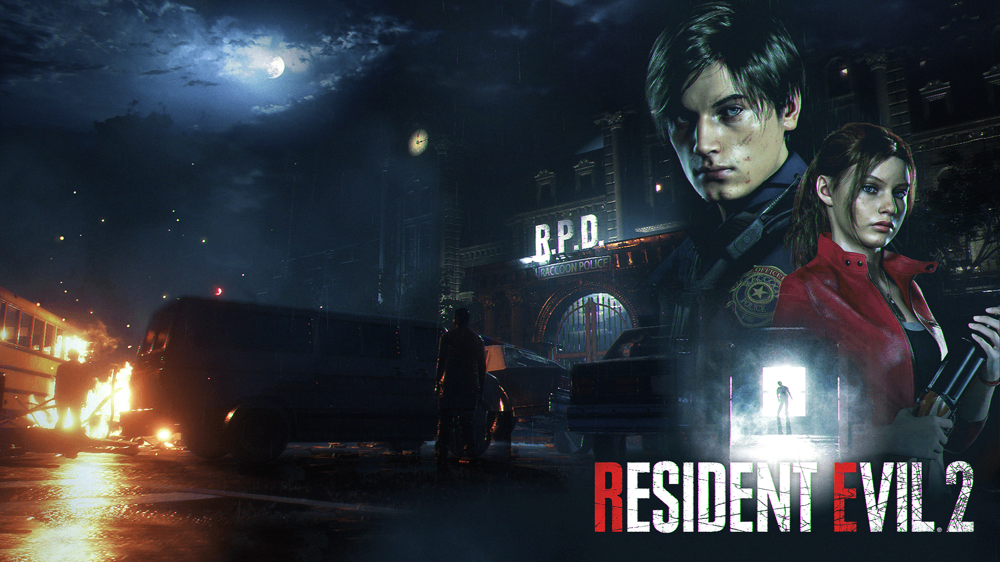

Resident Evil 2 (Remake)
A remake of the original 1998 Resident Evil 2 game, it follows rookie police officer Leon S. Kennedy and student Claire Redfield as they attempt to escape from Raccoon City during a zombie apocalypse

Leon S. Kennedy, a rookie cop who recently joined Raccoon City Police Department
Claire Redfield, a college student who went to Raccoon City to look for her brother Chris Redfield
Ada Wong, a spy who took advantage of the T-Virus outbreak in Raccoon City to gain entry into Umbrella's research posts
Sherry Birkin, daughter of Anette and William Birkin, reseachers of Umbrella Cooperation